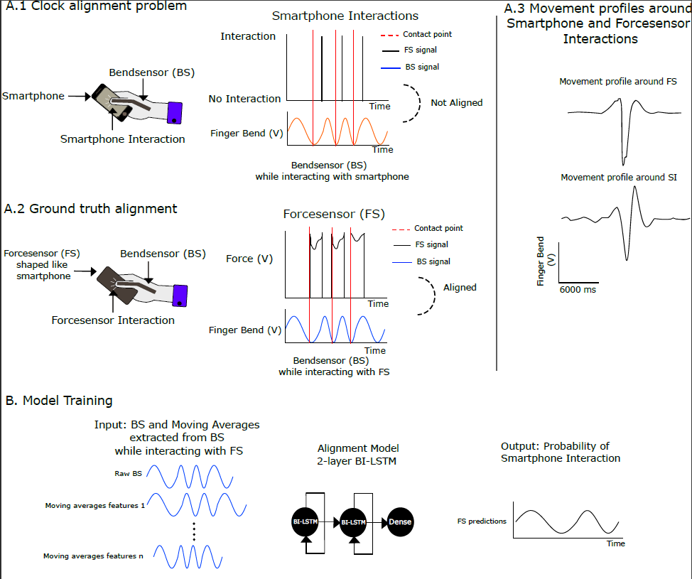

Data alignment: Moving Averages (MA)¶
To achieve alignment of Bendsensor(BS) and Forcesensor(FS) data, a Bidirectional Long short-term memory (BiLSTM) is trained. This documentation explains the alignment process using moving averages of the BS data as the features.
Alignment problem¶
There were misalignments between the datasets. The EEG and BS data were recorded on a Windows computer time clock, and the phone data was recorded on an Android phone clock. As a result, there were occasional time drifts in the recording. Potential effects might be missed or found at incorrect places due to misaligned data. Therefore, an alignment method was explored to ensure a more accurate mapping between the two datasets. The alignment problem is outlined in this figure:
The goal was to align the smartphone data to either the BS or EEG data, as these two datasets were aligned. Thus, alignment with the smartphone data via either one will result in alignment with the other. The FS data and BS data were aligned as they were measured using the same clock. The FS was placed in a box that resembled a smartphone. This was done to generate similar movements comparable to SIs when interacting with the FS (Figure A.3). As such, the FS data could be seen as a representation of a smartphone interaction. If a mapping can be learned from BS signals to FS interactions, then it is possible that a similar mapping applies from BS signals to smartphone interactions. To learn this mapping, an ANN (BI-LSTM) was trained with BS and FS data.
Data preparation¶
The data preparation is performed in Matlab R2019b.
During the measurements of the data, the participants alternated between using their smartphone to collect taps, and using a ‘box’ which measured FS data. The BS measurements were collected throughout the whole measurement process. Thus, for each participant, the data had to be separated, because only the sections which contained BS and FS data were used during training.
Bendsensor (BS)¶
The model input is BS data. Moving averages are used as features to the model.
The data preparation consisted of the following steps:
Pre-processing
Raw BS data: EEG.Aligned.BS.Data(:,1).
To remove movement irrelevant information from the BS data a bandpass filter is used with a range of 1 to 10 Hz.
Outlier detection and removal
Segments where BS data may have been absent are removed. Missing BS data is defined as any sequence of 1000 milliseconds or higher where the sum of the difference between the signals is 0.
Three participants were visually identified to have flipped BS data. This occurs when the BS was attached the wrong way during data collection. These are participant DS02, DS07 and DS22. The BS is flipped before training for these participants
Moving averages
Calculate the moving average over each time window, where each mean is calculated over a sliding window of length k. For the first calculation k is 10. Shrink endpoints of moving averages
Repeat step 2 and 3, i times. k grows in steps of 10.
Forcesensor (FS)¶
The model output is FS data.
Pre-processing
Raw FS data: EEG.Aligned.BS.Data(:,2).
No movement pressure in the FS data is shown as values ranging from ^0.8 to ^1. As no pressure is always the same, all these values were transformed to one common value which is ^1.
The FS contained noise. These are seen as fast spikes smaller than 5 ms. These spikes are too fast to be real movements and were thus set as no movement(^1).
Sampling rate of the FS is 1000 Hz.
The data is exported as a h5 file. The structure is /participant_fileNumber/participant_windowNumber/filename_filetype_windowNumber As an example for participant DS01 file 1 window 2 the file looks like: /DS01_1/DS01_1_win_2/DS01_BS_2
Model¶
The model is a simple bidirectional lstm. It was trained in Keras version 2.2.4. This is necessary to be able to import the Keras model into matlab.
model - keras.Sequential()
model.add(keras.layers.Bidirectional(keras.layers.LSTM(100, return_sequences-True), input_shape-(timesteps,num_features)))
model.add(keras.layers.Bidirectional(keras.layers.LSTM(64)))
model.add(keras.layers.Dense(1000))
model.summary()
model.compile(loss-'mse', optimizer-'adam')
The model was trained in batches of shape (B,T,F), where B is 10, T is 1000 and F is 100. The loss function was mean squared error and the optimizer Adam. Models are trained for 5 epochs.
Prediction¶
The model was imported into matlab for prediction, using the Deep Learning Toolbox.
The data is prepared for prediction in the same way as it was prepared for training. The prediction is performed in batches.
Directory structure¶
+-- Alignment
| +-- decision_tree
| | +-- decision_peak_prominance.m --> One heuristic rule checking for model peak prominance
| | +-- decision_tree_alignment.m --> performs the alignment and ignores participants based on heuristics
| +-- features --> Scripts to generate the features for training
| | +-- create_hdf_MA.m --> creates the h5 data file for training the MA model
| | +-- create_matrix_MA.m --> creates the moving averages matrix
| | +-- preprocess.m --> preprocess FS and BS data
| | +-- seperate_FS_sets.m --> seperates data into windows where there is FS data present
| +-- predict --> Scripts to predict the results
| | +-- predict_MA.m --> performs model predictions
| | +-- main_lstm_MA.m --> calls all functions for prediction or data generation
| +-- training --> Scripts to train the model(s)
| | +-- lstm_MA.py --> trains the model and saves weights and model structure
| +-- result_plotting
| | +-- **TODO**
Code¶
Features¶
- alignment.features.create_hdf_MA(EEG, inner_loop_idx, participant, save_path)¶
Create hdf file with data for model training
Usage: create_hdf_MA(EEG, inner_loop_idx, participant, save_path)
- Input(s):
EEG = EEG struct
inner_loop_idx = index in which to add the data in the h5 file
participant = participant folder name and file number (E.g. AGO3_2)
save_path = path to save the file with .h5 extention. Example: ‘data/alignment_train_data/MA.h5’
- Output(s):
None - generates a h5 file at the save_path location with the training data
- Requires:
seperate_FS_sets.m
preprocess.m
create_matrix_MA.m
Author: R.M.D. Kock
- alignment.features.create_matrix_MA(BS_window)¶
Create moving averages matrix from BS data
Usage: [MA_matrix] = create_matrix_MA(BS_window)
- Input(s):
BS_window = preprocessed BS dataset.
- Output(s):
- MA_matrix = Moving averages matrix, these are the features for training
Size: (length BS_window x 100)
Author: R.M.D. Kock
- alignment.features.preprocess(EEG, bandpass_upper_range)¶
Preprocess force sensor data and prepare bendsensor data
Usage: [filtered, BS, base] = preprocess(EEG, bandpass_upper_range)
- Input(s):
EEG = EEG struct from one participant
bandpass_upper_range = int maximum frequency range used in the bandpass filter
- Output(s):
filtered = preprocessed forcesensor data
BS = preprocessed BS dataset
base = value when there is no force on the sensor
- Requires:
getcleanedbsdata.m
remove_inactive_bs.m
Author: R.M.D. Kock
- alignment.features.seperate_FS_sets(filtered, BS, base)¶
Extracts bendsensor values when force sensor data is present
Usage: [dataset,base_indices] = seperate_FS_sets(filtered, BS, base)
- Input(s):
filtered = preprocessed force sensor data
BS = preprocessed BS dataset
base = value when there is no force on the sensor
- Output(s):
dataset = cell array containing the seperate FS and BS windows
base_indices = indexes where the FS data starts and ends
Author: R.M.D. Kock
Training¶
Prediction¶
- alignment.predict.main_lstm_MA(EEG, model_file_path, weights_file_path)¶
Generates model predictions
Usage: [BS,model_predictions] = main_lstm_MA(EEG, model_file_path, weights_file_path)
- Input(s):
EEG = EEG struct m
model_file_path = keras model (h5 or JSON)
weights_file_path = keras model weights (h5)
- Output(s):
BS = preprocessed bendsensor data
model_predictions = output from lstm
- Requires:
getcleanedbsdata.m
predict_MA.m
- Example:
main_lstm_MA(EEG, ‘model_version2_2_4A.json’, ‘model_version2_2_4A_weights.h5’);
- alignment.predict.predict_MA(BS, net)¶
Prepare data for prediction and predict in batches
Usage: [model_predictions] = predict_MA(BS,net)
- Input(s):
BS = preprocessed bendsensor data
net = keras imported network
- Output(s):
model_predictions = model output
Results analysis¶
- alignment.decision_tree.decision_peak_prominance(epoched_model_predictions)¶
Participant selection based on the difference between the aligned largest peak and second largest peak
Usage: [simple, differences_bs] = decision_peak_prominance(epoched_model_predictions)
- Input(s):
epoched_model_predictions = epoched model predictions timelocked to aligned taps
- Output(s):
simple = 1: participant kept , 0 = participant rejected
differences_bs = difference between the largest peak and second largest peak
Author: R.M.D. Kock
- alignment.decision_tree.decision_tree_alignment(EEG, BS, create_diagnostic_plot)¶
Decides when to choose the model based alignment, BS based alignment, or old alignment
Usage: [EEG simple] = decision_tree_alignment(EEG, BS, create_diagnostic_plot)
- Input(s):
EEG = EEG data from one participant
BS = preprocessed BS dataset
create_diagnostic_plot = bool 1= yes create diagnostic plot, 0 = do not create plot
- Output(s):
EEG = EEG data from one participant where EEG.Aligned.Phone.Blind contains corrected alignment rules
simple = 1: model based alignment , 0 = no alignment empty field returned
Author: R.M.D. Kock